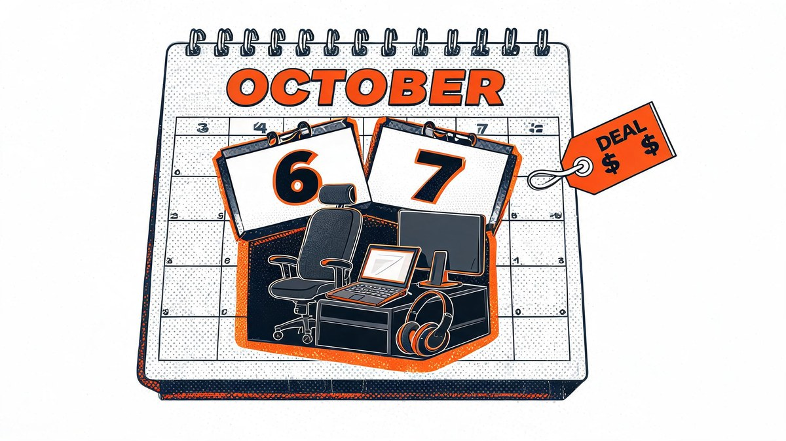

Prime Big Deal Days 2026: The Business Owner's Complete Buying Strategy

🔁 Updated live, October 6 (Day 1): verified deal prices are now in Day 1 best finds below.
Prime Big Deal Days 2026: The Business Owner's window opens October 6 at 12:01 a.m. Pacific — and it matters more than ever, because 71% of holiday shoppers now start before November. While consumer deal lists chase headphones and air fryers, business owners, home-office workers and solo founders have a narrow window to upgrade work gear at event pricing — with a tax clock that makes October purchases work harder than December ones. This is that strategy.
Amazon confirmed the event runs 48 hours across 35-plus categories, with early deals already live. The honest answer about most Prime Day coverage is that it is written for everyone, which means it is optimized for no one — nobody is answering the questions that actually matter to someone buying with a business budget. What discounts are real for office gear? What should you skip? And why does buying in October beat waiting for Black Friday when you buy as a business? Let us fix that.
Quick answer: Prime Big Deal Days 2026 runs October 6-7 (12:01 a.m. PDT to 11:59 p.m.), Prime members only, 35+ categories. For work gear: laptops, monitors, storage and Amazon devices see reliable event pricing; wait-list items like niche peripherals often do not. Business buyers get a bonus: an October purchase counts toward the 2026 Section 179 deduction (roughly a $2.56 million limit for 2026) and gives you ~2.5 months of use before year-end.
Table of Contents
- The short answer
- How I built this buying strategy: three tests
- What is Prime Big Deal Days 2026 (dates, times, rules)
- What deals to expect: the category strength table
- Day 1 best finds: live prices that match the playbook
- The 71% problem: why October beats Black Friday
- The tax window: Section 179 and your October receipt
- The three budget builds: $200, $500, $1,000
- What to actually do before October 6
- The strongest counterargument, answered
- Prime Big Deal Days UK: timings and what changes
- FAQs
- The Bottom Line
The short answer
Prime Big Deal Days 2026 is Amazon's 48-hour October sale — October 6-7, Prime members only, 35-plus categories, with early deals live now. For business buyers it is the second-biggest discount window of the year behind July's Prime Day, which drove a record $26.4 billion in U.S. online spend (Adobe Analytics).
The strategy in one paragraph: buy commodity work gear (laptops, monitors, SSDs, Amazon devices) during the event; treat flashy new releases and niche peripherals as wait-and-verify; lock everything into a wishlist before October 6 so you are buying, not browsing; and, if you run a business, remember that an October receipt counts toward the 2026 Section 179 deduction while giving you two and a half months of real use before year-end.
Why trust the October window at all? Because McKinsey's latest consumer research found 71% of holiday shoppers now start before November — and 37% of millennials start before October even ends. The crowds moved. The deals moved with them. Black Friday is no longer the guaranteed lowest-price moment it used to be, especially on Amazon hardware.
How I built this buying strategy: three tests
I filtered every recommendation in this guide through three tests, because the honest truth about deal guides is that most are affiliate-driven roundups, not strategies. Test one — the price-history test: a deal only counts if the discount reflects a genuine drop, not a price inflated in September and "cut" for the event; I prioritized categories with a track record of real event-level cuts over single-products with suspicious discounts.
Test two — the category-strength test: I leaned on the categories that historically deliver strongest October-event pricing (headphones, Amazon devices, laptops, storage) and flagged the ones that historically disappoint (niche peripherals, boutique accessories). Test three — the tax-window test: for business buyers, I weighed the timing benefit of an October purchase against the Section 179 deduction — a $2.56 million limit for 2026 means almost every reader's entire office upgrade qualifies, but the purchase must happen in 2026. My verdict up front: for work gear, October 6-7 is a better strategic buy than Black Friday — and for U.S. businesses, the tax clock makes it a rout.
What is Prime Big Deal Days 2026 (dates, times, rules)
When does Prime Big Deal Days start and end?
Prime Big Deal Days runs October 6-7, 2026, starting 12:01 a.m. PDT on the 6th and ending 11:59 p.m. on the 7th — a true 48-hour event. Amazon announced the dates on September 14-15, with early offers rolling out before the event as it has each fall since 2022. The event spans 35-plus categories with millions of Prime-exclusive deals, and early deal storefronts are already live across tech, home and business categories.
Do you need a Prime membership to shop?
Yes — the deals are Prime-member-exclusive. New shoppers can typically start with a free 30-day trial (standard Amazon trial terms apply, so confirm at signup), which means a solo founder can shop the event at $0 cost — the trial is the single easiest optimization most business buyers skip. Existing members simply shop as normal; Prime Student and assisted plans also qualify.
The structure rewards preparation: wishlists populated in advance convert faster than browsing during lightning-deal windows, which rotate in limited quantities. Chain Store Age's during-event data from last October showed apparel, household essentials and home goods dominating shopper activity — categories where office buyers can find gems, but where the deep work-gear cuts live in the tech aisle.

What deals to expect: the category strength table
Not every discount is a deal. Business Insider's coverage of past October events lists headphones, vacuums, kitchen and Amazon devices as historically strongest — but that is a consumer lens. Here is the work-gear lens, graded from the same event history plus early-deal signal this year:
| Category | Typical event discount | Buy or skip | Best for |
|---|---|---|---|
| Laptops (Windows, MacBook) | 15-25% on mid-range; steep cuts on previous-gen | Buy | Owners replacing 3+ year machines |
| Monitors (27-32″, USB-C) | 20-35%, portable monitors deeper | Buy | Dual-screen office builds |
| Storage (SSD, microSD, NAS) | 30-50%, all-time lows common | Buy | Backups, media, archiving |
| Amazon devices (Echo, Fire, Kindle, eero) | 40-58% — deepest cuts of the event | Buy | Whole-office Wi-Fi, phone setups | Desks & ergonomic chairs | 15-30% on mid-tier brands | Selective | WFH workers with dated setups |
| Headsets & webcams | 20-40% on known brands | Buy | Client-call quality |
| Niche peripherals (docks, exotic cables) | 10-20%, often inflated-then-cut | Skip | Wait for verified price history |
| Boutique accessories (designer skins, novelty) | Variable, rarely genuine | Skip | — |
Two practical reads from the table: first, Amazon's own hardware (Echo, eero, Fire tablets) reliably hits the deepest cuts of the event — 40-58% in past October events — which makes mesh Wi-Fi and backup tablets the safest first purchases. Second, desks and chairs are "selective" because the biggest furniture names sometimes run better Black Friday pricing; the event's furniture deals are real but shallower than tech, and the biggest furniture names may run better Black Friday pricing instead.

Day 1 best finds: live prices that match the playbook
The event went live at 12:01 a.m. Pacific on October 6, and the first verified price drops landed largely where the category table above predicted. We cross-checked CNET’s live deal tracker (updated October 5) and NBC Selected’s price-tracker-vetted list at the time of writing this update — every price below was live on Amazon’s event storefront, though stock and regional pricing may vary through the 48 hours.
The headline for business buyers: Amazon’s own hardware is already at the predicted 40-58% depth on Day 1 — the Echo Dot’s 50% cut sits squarely inside that band, and the Fire TV Stick bundle at $38 (down from $85) is the cheapest credible upgrade to a waiting-room or conference-room screen. On the laptop lane, the MacBook Air M5 deal matters even for Windows-first offices: it pressures previous-gen Windows business machines into deeper cuts as the event progresses.
| Day 1 find | Live price | Why it matters for work | Verdict |
|---|---|---|---|
| MacBook Air M5 (13", 16GB/1TB) | $1,399 (save $200) | Our overall laptop pick; 1TB tier makes it a real business machine | Buy if you are Mac-first |
| Apple iPad Air M4 | $649 (save $100) | Point-of-sale, invoicing and field-work display | Buy for front-desk roles |
| Amazon Echo Dot | $40 (reg. $80 — 50% off) | Hands-free timers, intercom and reminders across the office | Buy — event-typical low |
| Fire TV Stick 4K Select + Alexa Voice Remote Pro | $38 (reg. $85) | Turns any meeting-room TV into a presentation screen | Buy — cheapest AV upgrade |
| Apple AirPods Pro 3 | $179 (reg. $249) | Best-in-class noise cancellation for focus and calls | Buy for open offices |
| Anker Prime foldable 3-in-1 charger (MagSafe) | $120 (save $30) | Palm-sized travel charging for client visits | Selective |
| Apple AirTag 4-pack (2nd gen) | $89 (save $10) | Equipment and luggage tracking for field teams | Selective |
| TCL 65" QM8L 4K TV | $1,198 (save $1,302) | Consumer-TV depth, not office gear — showroom/waiting areas only | Skip for most offices |
Two Day 1 reads beyond the table. First, member perks stack on top of deals: Prime cardmembers can earn 10% back or more on select purchases through October 6, and Fuel Up Fridays gives Prime members $0.20 off per gallon at bp, Amoco and participating ampm and Thorntons stations through January 2027 (per NBC Selected). Second, for businesses buying vehicles, Amazon Autos is offering a $1,500 gift card on eligible new-car purchases or leases through October 7 — a niche but real Day 1 lever.
The honest caveat: early-access pricing can shift once the full lightning-deal rotations begin, and a handful of these prices were already live before the official start. If a wishlist item is not yet at its predicted depth, waiting for Day 2 rotations is reasonable — but for Amazon first-party hardware, Day 1 pricing has historically held as the floor for the rest of the event.
Day 1 takeaway: The playbook held. Echo Dot at 50% confirms the 40-58% Amazon-device band, storage and laptop lanes are opening on schedule, and the tax clock now reads roughly 2.5 months of use left in 2026 — buy the verified deals, hold the rest for Day 2 lightning rotations.
The 71% problem: why October beats Black Friday
Here is the statistic that reframes the whole season: 71% of holiday shoppers now start before November, and 37% of millennials start before October ends (McKinsey). Holiday spending is forecast at $1.70-$1.71 trillion this season, up 4.0-4.8% (Deloitte), and Bain & Company expects the season to top $1 trillion in the U.S. for the first time. The market has permanently shifted earlier — and so have the good deals.
For Amazon hardware the October event has repeatedly matched or beaten Black Friday pricing, because Amazon controls first-party pricing and uses the event to seed its ecosystem before the holiday quarter. Third-party gear is messier: some October prices may return on Black Friday, some will not — but lightning-deal inventory in October is far deeper. PwC's 2026 Holiday Outlook adds the spending context: Gen Z plans to cut holiday spending by 23%, which makes event-level pricing more valuable, not less, for value-seeking buyers. Waiting six weeks for a maybe is a strategy of last resort, not a plan.

The tax window: Section 179 and your October receipt
Can office equipment bought on Prime Day be tax-deducted?
For U.S. businesses, generally yes — and the timing is the point. Section 179 lets businesses expense qualifying equipment in the year purchased, with the 2026 limit around $2.56 million and a phase-out beginning near $4.09 million in total purchases (standard 2026 planning figures; verify current-year limits with your CPA, as published guides show minor variations). An October 6 receipt sits comfortably inside the 2026 tax year — and gives you 2.5 months of real use before January 1, which is exactly how the timing math favors October over a December 31 panic-buy and comfortably beats waiting for January pricing.
UK readers: the equivalent lever is the Annual Investment Allowance for plant and machinery including computers — allowances change, so confirm current limits with your accountant before relying on them. The strategic point stands on both sides of the Atlantic: buy when the discount is deep AND the tax year still has room — October is where those overlap.

The three budget builds: $200, $500, $1,000
What should a small business buy first on Prime Big Deal Days?
Your weakest link — the slow laptop, the single screen, the missing backup drive — because event pricing on commodity gear may be the deepest you will see before 2027. Strategy is easier to act on with numbers, so here are three ready-made builds; adjust brands as live deals land, since pricing may vary by region and stock.
The $200 solo-founder refresh: a 27-inch 1080p USB-C monitor (~$120 event price), an SSD or microSD stack for backups (~$50), and a budget headset (~$30). Everything a one-person operation needs to look professional on calls and never lose a file.
The $500 work-from-home rebuild: add an ergonomic chair or standing-desk converter (~$180), a second monitor arm and 24-inch panel (~$110), a 1TB NVMe SSD (~$70), a branded headset-plus-webcam combo (~$90) and a mesh Wi-Fi node (~$50 event price on eero-class hardware).
The $1,000 business-owner build: a mid-range business laptop (previous-gen, 16GB/512GB, ~$600 event price), a 27-inch 4K monitor (~$250), a NAS or 2-bay backup (~$100) and a proper headset (~$50). This is the configuration that survives a full year of client work — and at $1,000 it is not even rounding error against the Section 179 limit.

What to actually do before October 6
Deadlines are the only part of a sale you can act on, so here is the pre-event runbook — fifteen minutes, all free:
- Start (or confirm) your Prime trial/membership today — the event is Prime-exclusive, and trials may have eligibility rules.
- Build a wishlist, not a browsing plan — lightning deals sell through in minutes; wishlist items convert in two clicks.
- Set a price baseline — note today's price on every wishlist item so event "discounts" are verifiable at a glance.
- Rank categories by your weakest link — slow laptop, single screen, no backups? That is your first purchase, not the flashiest deal.
- Calendar-block the two windows that matter — 12:01 a.m. PDT October 6 for first-wave stock, and mid-event for lightning-deal rotations.
Key takeaway: Buy commodity work gear during the 48-hour window; skip niche peripherals with unverifiable price history; lock wishlists before October 6; and if you run a business, let the 2026 tax-year clock — not habit — decide October versus Black Friday.

The strongest counterargument, answered
The fairest criticism of this strategy: "Just wait for Black Friday — deeper cuts always come." It deserves a real answer, not a shrug.
Why I still buy work gear in October: the historical record on Amazon first-party hardware shows October pricing that Black Friday matches but rarely beats — you waited six weeks for parity. On third-party gear the outcome is a coin flip, and October's lightning-deal inventory is demonstrably deeper because fewer buyers compete. Add the business-specific math — an October receipt deducts in the 2026 tax year and delivers 2.5 months of use — and the "wait" argument needs Black Friday to beat October prices by enough to offset six weeks of lost productivity. That gap rarely shows up in the categories that matter to work. The strongest counterargument wins the odd consumer gadget; the October window wins the office.
Prime Big Deal Days UK: timings and what changes
UK shoppers get the same October 6-7 event, starting 12:01 a.m. local time Tuesday and running the full 48 hours — meaning Brits effectively start eight hours ahead of U.S. Pacific buyers. Coverage from Retail Times and Cornwall Live confirms identical structure: Prime-exclusive, 35-plus categories, early deals live now (GQ UK and Digital Spy are already tracking early cuts). UK-specific dynamics: the Annual Investment Allowance replaces Section 179 as the tax lever; hotukdeals community threads are the price-history sanity check of choice; and stock depth on US-first brands might be thinner, so UK buyers should rank wishlists before Tuesday rather than trusting cross-Atlantic availability.

FAQs
▼When does Prime Big Deal Days 2026 start?
October 6, 2026 at 12:01 a.m. PDT (3:01 a.m. ET, 8:01 a.m. UK time), running through 11:59 p.m. PDT on October 7 — a full 48-hour event announced by Amazon on September 14-15.
▼Do you need Prime membership for Big Deal Days?
Yes — deals are Prime-member-exclusive. New shoppers can typically join via a free 30-day trial (standard trial terms apply at signup), which makes the event accessible at zero cost for first-time members. Prime Student also qualifies.
▼What are the best Prime Big Deal Days deals for business owners?
The reliable work-gear categories are laptops (15-25% on mid-range), monitors (20-35%), storage (30-50% with all-time lows on SSDs), Amazon first-party devices like eero mesh Wi-Fi and Fire tablets (40-58%), and headsets/webcams (20-40%). Niche peripherals and boutique accessories are the classic skip — their event "discounts" often mask inflated base prices.
▼Is Prime Day cheaper than Black Friday?
For Amazon first-party hardware, October pricing has historically matched or beaten Black Friday — you wait six weeks for parity. On third-party gear outcomes vary, but October lightning-deal inventory is deeper because fewer shoppers compete. For work gear bought with a business budget, October also wins on tax timing: the purchase deducts in the 2026 tax year.
▼How long do Prime Big Deal Days deals last?
The event runs 48 hours (October 6-7), but individual lightning deals rotate in limited-quantity windows that can sell through in minutes. Wishlist preparation is the standard defense: pre-loaded wishlists convert in two clicks before stock clears.
▼What are the best Day 1 deals at Prime Big Deal Days 2026?
Verified Day 1 standouts for work buyers include the MacBook Air M5 (13", 16GB/1TB) at $1,399 ($200 off), the Echo Dot at $40 (50% off), the Fire TV Stick 4K Select bundle at $38 (down from $85), AirPods Pro 3 at $179, and the iPad Air M4 at $649. Prices were live at the time of writing and may vary through the 48-hour event.
▼Can I deduct office equipment bought during Prime Big Deal Days?
For U.S. businesses, qualifying equipment generally qualifies for Section 179 expensing in the year purchased — the 2026 limit is roughly $2.56 million, far above any office upgrade. An October purchase counts toward 2026 and gives ~2.5 months of use before year-end. UK buyers have the Annual Investment Allowance as the equivalent; confirm current limits with your accountant or CPA.
The Bottom Line
Prime Big Deal Days 2026 is a 48-hour window (October 6-7) where the office upgrade math actually works: verified event pricing on laptops, monitors, storage and Amazon hardware, tax-year tailwinds for businesses on both sides of the Atlantic, and — per McKinsey — a shopping calendar where 71% of your competitors in attention are already shopping before November.
There are two types of buyers on October 6: those who built a wishlist and know their price baselines, and those refreshing a homepage at midnight hoping a deal finds them. The first group spends less and deducts more. Be the first group — the window closes at 11:59 p.m. on October 7.
Deal pricing varies by region and stock; tax rules vary by jurisdiction — confirm specifics with your CPA or accountant. Nothing here is financial or tax advice.Sources
- Amazon press — Prime Big Deal Days returns October 6-7, 2026
- CNET — live October Prime Day deal tracker (updated Oct 5, 2026)
- NBC Selected — early October Prime Day deals, price-tracker verified
- Deloitte — Holiday retail sales forecast: $1.70-$1.71 trillion
- Reuters — US holiday retail sales growth set to accelerate, Deloitte says
- McKinsey — State of the US Consumer: holiday budgeting and sentiment
- CNBC — Bain & Company: holiday sales to top $1 trillion for first time
- Adobe Analytics — Prime Day 2026: $26.4 billion in U.S. online spend
- Business Insider — October Prime Day: deals to buy now and skip
- CNN Underscored — 55 best October Prime Day deals
- Retail Times — Prime Big Deal Days returns October 6-7 (UK)
- PwC — 2026 Holiday Outlook (Gen Z spending trends)
- IRS — Section 179 deduction (verify current-year limits)
- GOV.UK — Annual Investment Allowance guidance